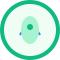

The Philosophy of Simplicity
Exploring the profound impact of minimalism on clarity and focus.
Read More →Discover insights and strategies for a more balanced and fulfilling life.
Cultivating awareness and presence in everyday life.
Strategies for continuous personal and intellectual development.
Nurturing connections and embracing a balanced lifestyle.

Exploring the profound impact of minimalism on clarity and focus.
Read More →Embracing transitions as opportunities for growth and self-discovery.
Read More →Making conscious choices in what we consume, from food to information.
Read More →